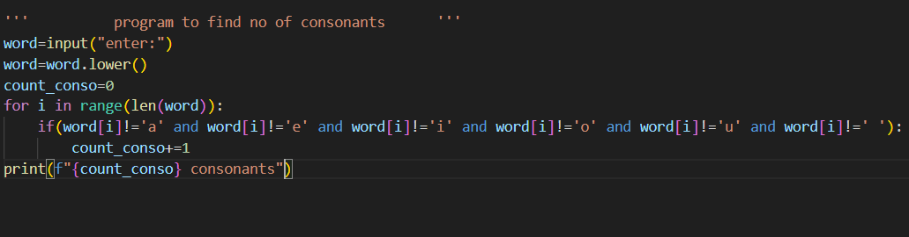
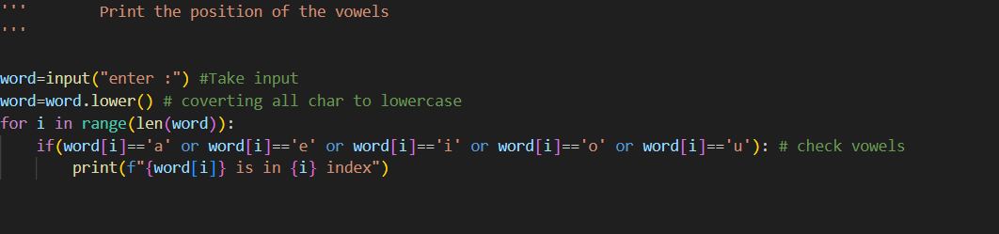
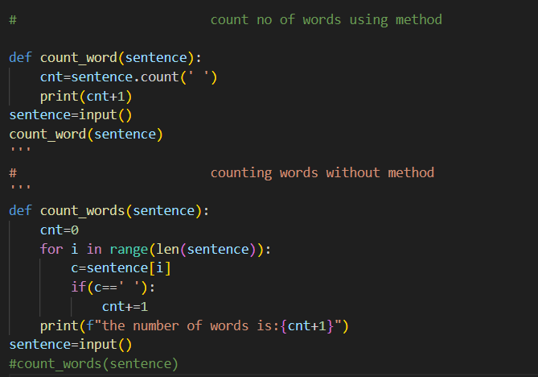
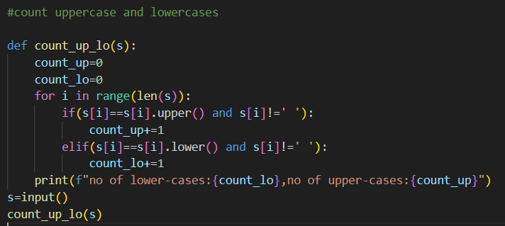

ok! Lets, dive into the python concepts
strings:
what is a string?
- A string is a collection of characters enclosed in a ' ' ," " and """ """ braces.
What Is Purpose of using Strings?
- Purpose of string is to input text based data like name,password,mail etc.
Properties of strings:
- They are immutable ie, they can't be changed once declared..
- They can be accessed by using index.
Note:
With index 0 we can access the first character of in a string and len(var_name)-1 will always returns last character in a string.
String Methods:
List of methods:
- upper(): Returns a string with upper-case click here
- lower() : Returns a string with Lower-case click here
- capitalize(): Make a 1st character upper-case only. click here
- title(): Make 1st character into upper-case of each word in a sentence. click here
- strip():Removes spaces from the string,But doesn't remove spaces between characters. click here
- lstrip():Removes leading spaces ie,clears spaces that are left to string click here
- rstrip():Remove tailing spaces. click here
- replace(old,new): Replaces the characters with the new characters in string click here
- find(char):Returns position of a character click here
- count(char):Returns a value how many times the occurance of particular character. click here
Pratice problems:
Here are some pratice problems that help you to make better in strings .First, try to solve problems on your own and then see the solution.
- write a Program to print total number of consonants in a given string.
Solution:

- Write a Program to print position of vowels in a string.
solution:

- Write a program in a function to find number words in a string(write 2 solutions using method & without using method).
solution

- write a program to take a function and str,num as parameters return characters that are the multiples of num
solution:
.png)
-
write a program to count upper-cases and lower-cases
solution:
